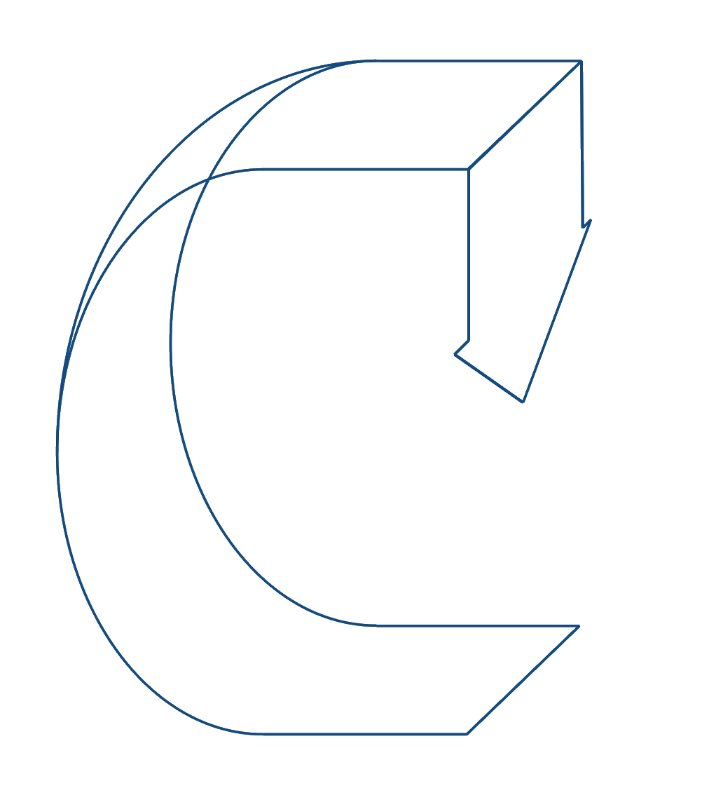

Museu da Ciência em Coimbra{{ message }}
Ciclo de conversas
Design+Multimédia
Ciclo de Conversas Design+Multimédia” é um ciclo de conferências que se realiza anualmente no âmbito dos cursos de Licenciatura e Mestrado em Design e Multimédia da Faculdade de Ciências e de Tecnologia da Universidade de Coimbra. Esta acção de divulgação pública fora da Faculdade pretende não só mostrar o trabalho de diferentes profissionais cujo trabalho é amplamente reconhecido, como contribuir para a divulgação do cursos, os primeiros nesta área leccionados na Universidade de Coimbra.
O programa é constituído por convidados de diversas áreas (Design Gráfico, Design de Interacção, Web Design, Arquitectura, Teoria do Design, Arte, Ilustração, etc.) repartidos por quatro sessões. Propositadamente se junta, na mesma sessão, duas entidades convidadas (que podem ser individuais ou colectivas) de áreas distintas. Decorrerá em Abril de 2022 , repartida em quatro sessões que terão lugar
às quartas da parte da tarde, no auditório do Museu da Ciência em Coimbra. As conferências são abertas ao público em geral e de entrada livre.

Joana Monteiro
A Joana é designer gráfica e faz direção de arte. No seu trabalho reconhece-se uma paixão pela tipografia. Para construção de imagens gráficas faz uso e mistura várias técnicas.
28.
04
28.
04
Joana Monteiro
A Joana é designer gráfica e faz direção de arte. No seu trabalho reconhece-se uma paixão pela tipografia. Para construção de imagens gráficas faz uso e mistura várias técnicas.
Joana Monteiro
A Joana é designer gráfica e faz direção de arte. No seu trabalho reconhece-se uma paixão pela tipografia. Para construção de imagens gráficas faz uso e mistura várias técnicas.
28.
04
Joana Monteiro
A Joana é designer gráfica e faz direção de arte. No seu trabalho reconhece-se uma paixão pela tipografia. Para construção de imagens gráficas faz uso e mistura várias técnicas.
28.
04
Administração da Universidade de Coimbra
Rua Larga
Edifício Faculdade de Medicina (R/Ch. Esq.)
3004-504 Coimbra
Telefone: +351 239 859 900
Fax:+351 239 827 994
E-mail: gabadmin@uc.pt
Web: http://www.uc.pt/administracao
Museu da Ciência
Laboratorio Chimico
Largo Marquês de Pombal
3000-272 Coimbra
T: 351 239 85 43 50
F: 351 239 85 43 59
geral@museudaciencia.org